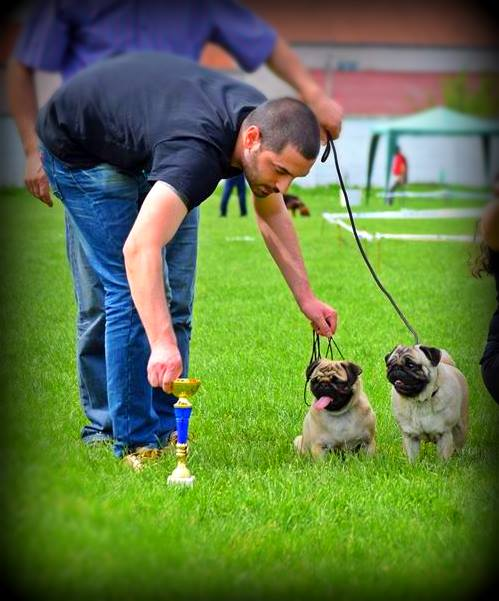
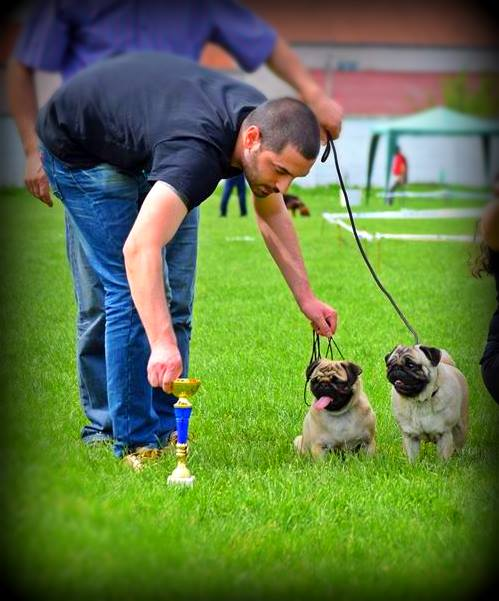
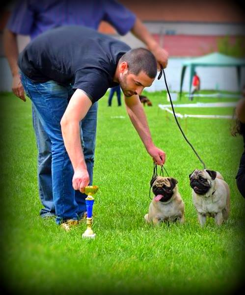

There are all kinds of dogs - brave, clever, good hounters, sniffers.. But we choose the gentle companion dogs - Pugs! We are in dog breeding since 2010s and we have dedicated our lives to improving breed, following FCI standards.
We look after our animals like our own children. We, more than anyone, understand that while anatomy, hair, smooth body proportions and good teeth are all important, it is also important that the dog has a well-rounded personality. For this reason we can confidently say that when you buy a puppy from "Unreal beauty" you will receive a suitable and well-socialized partner who will live with you for years to come. From an early age, all our puppies interact with children, cats, and other dogs of all sizes, so they develop an extremely stable personality and they are incredibly friendly.
Our dogs are constantly involved in various shows, from the local to the regional World and European championships, and our main goal is... to win them! We have important bloodlines and genes for our puppies, because it is a guarantee that they will be proper and healthy representative of the breed.
The price of our animals varies according to their level. We can supply puppies which demonstrate promise as elite show animals and we can also supply puppies as pets to be wonderful companions and make a house a home. Most importantly of all, however, is the fact that all our puppies are outstanding representatives of their breed and are absolutely healthy and sound in every way as all the kids (yes, that's right, the puppies are our children), without exception, are under the close supervision of the best veterinarians and are fed on a time-tested diet of the best food.
